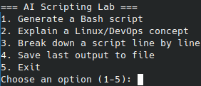

AI Sysadmin Assistant
Project started April 2025 — Actively maintained and expanding

Initial AI-powered CLI interface with scripting and learning tools
Project Overview
This project is a command-line learning lab powered by the OpenAI API, designed to help users practice scripting, explore technical concepts, and build real-world automation tools. It serves as both a learning platform and a personal assistant for systems-related tasks. The assistant currently uses GPT-3.5 Turbo for reliable and cost-effective performance.
Features
- Generate Bash scripts from natural language prompts
- Explain Linux and DevOps concepts clearly
- Break down Bash scripts line-by-line
- Save output to files for later use or documentation
- Simple menu-driven interface for consistent use
Tools & Technologies
- Python 3
- OpenAI GPT-3.5 Turbo API
- Bash / Linux CLI
- dotenv for secure config
- GitHub for version control and deployment
Skills Demonstrated
- Command-line application development in Python
- Prompt engineering and GPT API integration
- Use of virtual environments and environment variables
- Organized, version-controlled project structure
- Foundational scripting and automation concepts